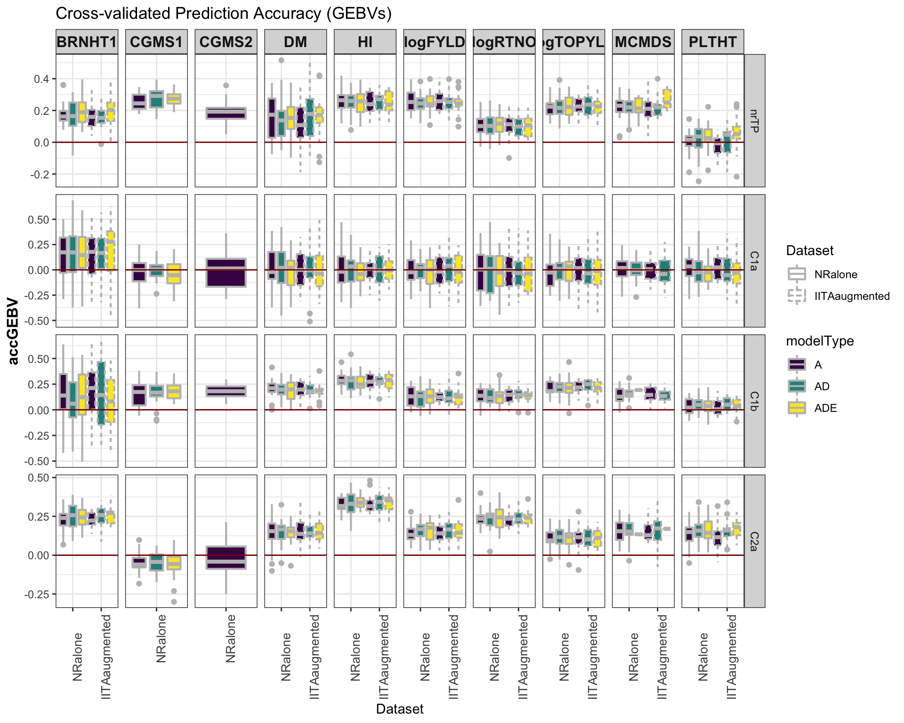

Last updated: 2020-04-28
Checks: 7 0
Knit directory: NRCRI_2020GS/
This reproducible R Markdown analysis was created with workflowr (version 1.6.1). The Checks tab describes the reproducibility checks that were applied when the results were created. The Past versions tab lists the development history.
Great! Since the R Markdown file has been committed to the Git repository, you know the exact version of the code that produced these results.
Great job! The global environment was empty. Objects defined in the global environment can affect the analysis in your R Markdown file in unknown ways. For reproduciblity it’s best to always run the code in an empty environment.
The command set.seed(20200421) was run prior to running the code in the R Markdown file. Setting a seed ensures that any results that rely on randomness, e.g. subsampling or permutations, are reproducible.
Great job! Recording the operating system, R version, and package versions is critical for reproducibility.
Nice! There were no cached chunks for this analysis, so you can be confident that you successfully produced the results during this run.
Great job! Using relative paths to the files within your workflowr project makes it easier to run your code on other machines.
Great! You are using Git for version control. Tracking code development and connecting the code version to the results is critical for reproducibility.
The results in this page were generated with repository version 8c45991. See the Past versions tab to see a history of the changes made to the R Markdown and HTML files.
Note that you need to be careful to ensure that all relevant files for the analysis have been committed to Git prior to generating the results (you can use wflow_publish or wflow_git_commit). workflowr only checks the R Markdown file, but you know if there are other scripts or data files that it depends on. Below is the status of the Git repository when the results were generated:
Ignored files:
Ignored: .DS_Store
Ignored: .Rhistory
Ignored: .Rproj.user/
Ignored: analysis/.DS_Store
Ignored: data/.DS_Store
Ignored: output/.DS_Store
Untracked files:
Untracked: NRCRI 2020 GS.gslides
Untracked: data/DatabaseDownload_42120/
Untracked: data/GBSdataMasterList_31818.csv
Untracked: data/IITA_GBStoPhenoMaster_33018.csv
Untracked: data/NRCRI_CleanedTrialData_2020April21.rds
Untracked: data/NRCRI_ExptDesignsDetected_2020April21.rds
Untracked: data/NRCRI_GBStoPhenoMaster_40318.csv
Untracked: data/iita_blupsForCrossVal_72619.rds
Untracked: data/iita_blupsForCrossVal_outliersRemoved_73019.rds
Untracked: output/DosageMatrix_NRCRI_SamplesForGP_2020April27.rds
Untracked: output/GEBV_NRCRI_IITAaugmented_ModelADE_2020April27.rds
Untracked: output/GEBV_NRCRI_IITAaugmented_ModelA_2020April27.rds
Untracked: output/GEBV_NRCRI_NRCRIalone_ModelADE_2020April27.rds
Untracked: output/GEBV_NRCRI_NRCRIalone_ModelA_2020April27.rds
Untracked: output/GETGV_NRCRI_IITAaugmented_ModelADE_2020April27.rds
Untracked: output/GETGV_NRCRI_NRCRIalone_ModelADE_2020April27.rds
Untracked: output/Kinship_AA_NRCRI_2020April27.rds
Untracked: output/Kinship_AD_NRCRI_2020April27.rds
Untracked: output/Kinship_A_NRCRI_2020April27.rds
Untracked: output/Kinship_DD_NRCRI_2020April27.rds
Untracked: output/Kinship_D_NRCRI_2020April27.rds
Untracked: output/NRCRI_CuratedTrials_2020April21.rds
Untracked: output/NRCRI_CuratedTrials_2020April27.rds
Untracked: output/cvresults_AD_nrOnly.rds
Untracked: output/cvresults_A_iitaAugmented.rds
Untracked: output/cvresults_A_nrOnly.rds
Untracked: output/genomicPredictions_ModelADE_NRCRI_2020April27.rds
Untracked: output/genomicPredictions_ModelA_NRCRI_2020April27.rds
Untracked: output/maxNOHAV_byStudy_NRCRI_2020April27.csv
Untracked: output/nrcri_blupsForModelTraining_2020April21.rds
Untracked: output/nrcri_blupsForModelTraining_2020April27.rds
Untracked: workflowr_log.R
Note that any generated files, e.g. HTML, png, CSS, etc., are not included in this status report because it is ok for generated content to have uncommitted changes.
These are the previous versions of the repository in which changes were made to the R Markdown (analysis/04-CrossValidation.Rmd) and HTML (docs/04-CrossValidation.html) files. If you’ve configured a remote Git repository (see ?wflow_git_remote), click on the hyperlinks in the table below to view the files as they were in that past version.
| File | Version | Author | Date | Message |
|---|---|---|---|---|
| Rmd | 8c45991 | wolfemd | 2020-04-28 | Publish the first set of analyses and files for NRCRI 2020 GS. |
Current Step:
5-fold cross-validation. Replicate 5-times.
3 genomic models:
The data for the next step can be found on the cassavabase FTP server here.
Can be loaded directly to R from FTP.
NOTICE: You need enough RAM and a stable network connection. I do the next steps, including cross-validation on a server with plenty of RAM and a good, stable network connection, rather than on my personal computer (a laptop with 16 GB RAM).
The outputs (kinship matrices and filtered snp dosages) of the steps below, which are too large for GitHub, can be found on the cassavabase FTP server here.
# activate multithread OpenBLAS for fast compute of SigmaM (genotypic var-covar matrix)
export OMP_NUM_THREADS=56library(tidyverse); library(magrittr);
snps<-readRDS(file=url(paste0("ftp://ftp.cassavabase.org/marnin_datasets/NGC_BigData/",
"DosageMatrix_RefPanelAndGSprogeny_ReadyForGP_73019.rds")))
#rm(list=(ls() %>% grep("snps",.,value = T, invert = T)))blups_nrcri<-readRDS(file=here::here("output","nrcri_blupsForModelTraining_2020April27.rds"))
blups_nrcri<-blups_nrcri %>%
select(Trait,modelOutput) %>%
unnest(modelOutput) %>%
select(Trait,BLUPs) %>%
unnest(BLUPs) %>%
filter(GID %in% rownames(snps))
table(unique(blups_nrcri$GID) %in% rownames(snps)) # 2879!
blups_iita<-readRDS(file=here::here("data","iita_blupsForCrossVal_outliersRemoved_73019.rds"))
blups_iita<-blups_iita %>%
select(Trait,blups) %>%
unnest(blups) %>%
select(-`std error`) %>%
filter(GID %in% rownames(snps),
!grepl("TMS13F|TMS14F|TMS15F|2013_",GID)) # don't want IITA GS progenies
table(unique(blups_iita$GID) %in% rownames(snps)) # 1228
union(blups_nrcri$GID,blups_iita$GID) %>% grep("c2",.,value = T,ignore.case = T)Going to use my own kinship function b/c I trust it’s dominance matrix calculation.
#' kinship function
#'
#' Function to create additive and dominance genomic relationship matrices from biallelic dosages.
#'
#' @param M dosage matrix. Assumes SNPs in M coded 0, 1, 2 (requires rounding dosages to integers). M is Nind x Mrow, numeric matrix, with row/columanes to indicate SNP/ind ID.
#' @param type string, "add" or "dom". type="add" gives same as rrBLUP::A.mat(), i.e. Van Raden, Method 1. type="dom" gives classical parameterization according to Vitezica et al. 2013.
#'
#' @return square symmetic genomic relationship matrix
#' @export
#'
#' @examples
#' K<-kinship(M,"add")
kinship<-function(M,type){
M<-round(M)
freq <- colMeans(M,na.rm=T)/2
P <- matrix(rep(freq,nrow(M)),byrow=T,ncol=ncol(M))
if(type=="add"){
Z <- M-2*P
varD<-sum(2*freq*(1-freq))
K <- tcrossprod(Z)/ varD
return(K)
}
if(type=="dom"){
W<-M;
W[which(W==1)]<-2*P[which(W==1)];
W[which(W==2)]<-(4*P[which(W==2)]-2);
W <- W-2*(P^2)
varD<-sum((2*freq*(1-freq))^2)
D <- tcrossprod(W) / varD
return(D)
}
}Make the kinships.
Below e.g. A*A makes a matrix that approximates additive-by-additive epistasis relationships.
A<-kinship(snps,type="add")
D<-kinship(snps,type="dom")
AA<-A*A
AD<-A*D
DD<-D*D
saveRDS(snps,file=here::here("output","DosageMatrix_NRCRI_SamplesForGP_2020April27.rds"))
saveRDS(A,file=here::here("output","Kinship_A_NRCRI_2020April27.rds"))
saveRDS(D,file=here::here("output","Kinship_D_NRCRI_2020April27.rds"))
saveRDS(AA,file=here::here("output","Kinship_AA_NRCRI_2020April27.rds"))
saveRDS(AD,file=here::here("output","Kinship_AD_NRCRI_2020April27.rds"))
saveRDS(DD,file=here::here("output","Kinship_DD_NRCRI_2020April27.rds"))
#rm(snps); gc()NOTICE: The outputs (kinship matrices and filtered snp dosages) of the steps below, which are too large for GitHub, can be found on the cassavabase FTP server here.
# activate multithread OpenBLAS
export OMP_NUM_THREADS=48
#export OMP_NUM_THREADS=88
#export OMP_NUM_THREADS=88rm(list=ls())
library(tidyverse); library(magrittr);
A<-readRDS(file=here::here("output","Kinship_A_NRCRI_2020April27.rds"))
blups_iita<-readRDS(file=here::here("data","iita_blupsForCrossVal_outliersRemoved_73019.rds"))
blups_iita<-blups_iita %>%
dplyr::select(Trait,blups) %>%
unnest(blups) %>%
dplyr::select(-`std error`) %>%
filter(GID %in% rownames(A),
!grepl("TMS13F|TMS14F|TMS15F|2013_",GID)) # don't want IITA GS progenies
blups_nrcri<-readRDS(file=here::here("output","nrcri_blupsForModelTraining_2020April27.rds"))
blups_nrcri<-blups_nrcri %>%
dplyr::select(Trait,modelOutput) %>%
unnest(modelOutput) %>%
dplyr::select(Trait,BLUPs) %>%
unnest(BLUPs) %>%
filter(GID %in% rownames(A))
# Set-up a grouping variable for:
## nrTP, C1a, C1b and C2a.
## Nest by Trait.
c1a<-blups_nrcri$GID %>%
unique %>%
grep("c1a",.,value = T,ignore.case = T) %>%
union(.,blups_nrcri$GID %>% unique %>%
grep("^F",.,value = T,ignore.case = T) %>%
grep("c1b",.,value = T,ignore.case = T,invert = T))
c1b<-blups_nrcri$GID %>% unique %>% grep("c1b",.,value = T,ignore.case = T)
c2a<-blups_nrcri$GID %>% unique %>%
grep("C2a|C2b",.,value = T,ignore.case = T) %>%
grep("NR17",.,value = T,ignore.case = T)
nrTP<-setdiff(unique(blups_nrcri$GID),unique(c(c1a,c1b,c2a)))
cv2do<-blups_nrcri %>%
mutate(Group=ifelse(GID %in% nrTP,"nrTP",
ifelse(GID %in% c1a,"C1a",
ifelse(GID %in% c1b, "C1b",
ifelse(GID %in% c2a,"C2a",NA))))) %>%
nest(TrainTestData=-Trait) %>%
left_join(blups_iita %>%
nest(augmentTP=-Trait))
cv2do$TrainTestData[[6]] %>%
count(Group)# test arguments to function
# ----------------------
## Test 1 (additive only, no augmentTP)
# TrainTestData<-cv2do_nrAlone$TrainTestData[[1]]
# nrepeats<-1
# nfolds<-2
# ncores<-1
# gid<-"GID"
# byGroup<-TRUE
# modelType<-"A"
# grms<-list(A=A)
# augmentTP<-NULL
#
# ## Test 2 (additive + dominance , no augmentTP)
# TrainTestData<-cv2do_nrAlone$TrainTestData[[10]]
# nrepeats<-1
# nfolds<-2
# ncores<-1
# gid<-"GID"
# byGroup<-TRUE
# modelType<-"AD"
# grms<-list(A=A,D=D)
# augmentTP<-NULL
# splits<-cvsamples$splits[[1]]
# GroupName<-cvsamples$GroupName[[1]]
# ----------------------The function below implements nfold cross-validation. Specifically, for each of nrepeats it splits the data into nfolds sets according to gid. So if nfolds=5 then the the clones will be divided into 5 groups and 5 predictions will be made. In each prediction, 4/5 of the clones will be used to predict the remaining 1/5. Accuracy of the model is measured as the correlation between the BLUPs (adj. mean for each CLONE) in the test set and the GEBV (the prediction made of each clone when it was in the test set).
#' @param byGroup logical, if TRUE, assumes a column named "Group" is present which unique classifies each GID into some genetic grouping.
#' @param modelType string, A, AD or ADE representing model with Additive-only, Add. plus Dominance, and Add. plus Dom. plus. Epistasis (AA+AD+DD), respectively.
#' @param grms list of GRMs where each element is named either A, D, AA, AD, DD. Matrices supplied must match required by A, AD and ADE models. For ADE grms=list(A=A,D=D,AA=AA,AD=AD,DD=DD)...
#' @param augmentTP option to supply an additional set of training data, which will be added to each training model but never included in the test set.
#' @param TrainTestData data.frame with de-regressed BLUPs, BLUPs and weights (WT) for training and test. If byGroup==TRUE, a column with Group as the header uniquely classifying GIDs into genetic groups, is expected.
runCrossVal<-function(TrainTestData,modelType,grms,nrepeats,nfolds,ncores=1,
byGroup=FALSE,augmentTP=NULL,gid="GID",...){
require(sommer); require(rsample)
# Set-up replicated cross-validation folds
# splitting by clone (if clone in training dataset, it can't be in testing)
if(byGroup){
cvsamples<-tibble(GroupName=unique(TrainTestData$Group))
} else { cvsamples<-tibble(GroupName="None") }
cvsamples<-cvsamples %>%
mutate(Splits=map(GroupName,function(GroupName){
if(GroupName!="None"){
thisgroup<-TrainTestData %>%
filter(Group==GroupName) } else { thisgroup<-TrainTestData }
out<-tibble(repeats=1:nrepeats,
splits=rerun(nrepeats,group_vfold_cv(thisgroup, group = gid, v = nfolds))) %>%
unnest(splits)
return(out)
})) %>%
unnest(Splits)
## Internal function
## fits prediction model and calcs. accuracy for each train-test split
fitModel<-possibly(function(splits,modelType,augmentTP,TrainTestData,GroupName,grms){
starttime<-proc.time()[3]
# Set-up training set
trainingdata<-training(splits)
## Make sure, if there is an augmentTP, no GIDs in test-sets
if(!is.null(augmentTP)){
## remove any test-set members from augment TP before adding to training data
training_augment<-augmentTP %>% filter(!(!!sym(gid) %in% testing(splits)[[gid]]))
trainingdata<-bind_rows(trainingdata,training_augment) }
if(GroupName!="None"){ trainingdata<-bind_rows(trainingdata,
TrainTestData %>%
filter(Group!=GroupName,
!(!!sym(gid) %in% testing(splits)[[gid]]))) }
# Subset kinship matrices
traintestgids<-union(trainingdata[[gid]],testing(splits)[[gid]])
A1<-grms[["A"]][traintestgids,traintestgids]
trainingdata[[paste0(gid,"a")]]<-factor(trainingdata[[gid]],levels=rownames(A1))
if(modelType %in% c("AD","ADE")){
D1<-grms[["D"]][traintestgids,traintestgids]
trainingdata[[paste0(gid,"d")]]<-factor(trainingdata[[gid]],levels=rownames(D1))
if(modelType=="ADE"){
AA1<-grms[["AA"]][traintestgids,traintestgids]
AD1<-grms[["AD"]][traintestgids,traintestgids]
DD1<-grms[["DD"]][traintestgids,traintestgids]
trainingdata[[paste0(gid,"aa")]]<-factor(trainingdata[[gid]],levels=rownames(AA1))
trainingdata[[paste0(gid,"ad")]]<-factor(trainingdata[[gid]],levels=rownames(AD1))
trainingdata[[paste0(gid,"dd")]]<-factor(trainingdata[[gid]],levels=rownames(DD1))
}
}
# Set-up random model statements
randFormula<-paste0("~vs(",gid,"a,Gu=A1)")
if(modelType %in% c("AD","ADE")){
randFormula<-paste0(randFormula,"+vs(",gid,"d,Gu=D1)")
if(modelType=="ADE"){
randFormula<-paste0(randFormula,
"+vs(",gid,"aa,Gu=AA1)",
"+vs(",gid,"ad,Gu=AD1)",
"+vs(",gid,"dd,Gu=DD1)")
}
}
# Fit genomic prediction model
fit <- mmer(fixed = drgBLUP ~1,
random = as.formula(randFormula),
weights = WT,
data=trainingdata)
# Gather the BLUPs
gblups<-tibble(GID=as.character(names(fit$U[[paste0("u:",gid,"a")]]$drgBLUP)),
GEBV=as.numeric(fit$U[[paste0("u:",gid,"a")]]$drgBLUP))
if(modelType %in% c("AD","ADE")){
gblups %<>% mutate(GEDD=as.numeric(fit$U[[paste0("u:",gid,"d")]]$drgBLUP))
if(modelType=="ADE"){
gblups %<>% mutate(GEEDaa=as.numeric(fit$U[[paste0("u:",gid,"aa")]]$drgBLUP),
GEEDad=as.numeric(fit$U[[paste0("u:",gid,"ad")]]$drgBLUP),
GEEDdd=as.numeric(fit$U[[paste0("u:",gid,"dd")]]$drgBLUP))
}
}
# Calc GETGVs
## Note that for modelType=="A", GEBV==GETGV
gblups %<>%
mutate(GETGV=rowSums(.[,grepl("GE",colnames(.))]))
# Test set validation data
validationData<-TrainTestData %>%
dplyr::select(gid,BLUP) %>%
filter(GID %in% testing(splits)[[gid]])
# Measure accuracy in test set
## cor(GEBV,BLUP)
## cor(GETGV,BLUP)
accuracy<-gblups %>%
mutate(GETGV=rowSums(.[,grepl("GE",colnames(.))])) %>%
filter(GID %in% testing(splits)[[gid]]) %>%
left_join(validationData) %>%
summarize(accGEBV=cor(GEBV,BLUP, use = 'complete.obs'),
accGETGV=cor(GETGV,BLUP, use = 'complete.obs'))
computeTime<-proc.time()[3]-starttime
accuracy %<>% mutate(computeTime=computeTime)
return(accuracy)
},otherwise = NA)
## Run models across all train-test splits
## Parallelize
require(furrr); plan(multiprocess); options(mc.cores=ncores);
cvsamples<-cvsamples %>%
mutate(accuracy=future_map2(splits,GroupName,
~fitModel(splits=.x,GroupName=.y,
modelType=modelType,augmentTP=NULL,TrainTestData=TrainTestData,grms=grms),
.progress = FALSE)) %>%
unnest(accuracy)
return(cvsamples)
}Run some tests of the function…
# options(future.globals.maxSize= 1500*1024^2)
# test_cv_ad_yield<-runCrossVal(TrainTestData=cv2do$TrainTestData[[8]],
# modelType="AD",
# grms=list(A=A,D=D),
# byGroup=TRUE,augmentTP=NULL,
# nrepeats=1,nfolds=2,ncores=2,gid="GID")
#
# TrainTestData<-cv2do %>% filter(Trait=="logFYLD") %$% TrainTestData[[1]]
# augmentTP<-cv2do %>% filter(Trait=="logFYLD") %$% augmentTP[[1]]
# test_cv_a_augment<-runCrossVal(TrainTestData=TrainTestData,
# modelType="A",
# grms=list(A=A),
# byGroup=TRUE,augmentTP=augmentTP,
# nrepeats=1,nfolds=2,ncores=2,gid="GID")
# test_cv_a_noaug<-runCrossVal(TrainTestData=TrainTestData,
# modelType="A",
# grms=list(A=A),
# byGroup=TRUE,augmentTP=NULL,
# nrepeats=1,nfolds=2,ncores=2,gid="GID")cbsulm13 (96 cores; 512GB RAM)
cv_A_nrOnly<-cv2do %>%
mutate(CVresults=map(TrainTestData,~runCrossVal(TrainTestData=.,
modelType="A",
grms=list(A=A),
byGroup=TRUE,augmentTP=NULL,
nrepeats=5,nfolds=5,ncores=10,gid="GID")))
cv_A_nrOnly %<>% mutate(Dataset="NRalone",modelType="A") %>% dplyr::select(-TrainTestData,-augmentTP)
saveRDS(cv_A_nrOnly,file=here::here("output","cvresults_A_nrOnly.rds"))cbsulm18 (88 cores; 512GB)
For this one, try with ncores=1 instead of ncores=10.
cv_A_iitaAugmented<-cv2do %>%
mutate(isnullAugment=map_lgl(augmentTP,~is.null(.))) %>%
filter(!isnullAugment) %>%
select(-isnullAugment) %>%
mutate(CVresults=map2(TrainTestData,augmentTP,~runCrossVal(TrainTestData=.x,
modelType="A",
grms=list(A=A),
byGroup=TRUE,augmentTP=.y,
nrepeats=5,nfolds=5,ncores=1,gid="GID")))
cv_A_iitaAugmented %<>% mutate(Dataset="IITAaugmented",modelType="A") %>% dplyr::select(-TrainTestData,-augmentTP)
saveRDS(cv_A_iitaAugmented,file=here::here("output","cvresults_A_iitaAugmented.rds"))cbsulm15 (96 cores; 512GB RAM)
options(future.globals.maxSize= 1500*1024^2)
D<-readRDS(file=here::here("output","Kinship_D_NRCRI_2020April27.rds"))
cv_AD_nrOnly<-cv2do %>%
mutate(CVresults=map(TrainTestData,~runCrossVal(TrainTestData=.,
modelType="AD",
grms=list(A=A,D=D),
byGroup=TRUE,augmentTP=NULL,
nrepeats=5,nfolds=5,ncores=4,gid="GID")))
cv_AD_nrOnly %<>% mutate(Dataset="NRalone",modelType="AD") %>% dplyr::select(-TrainTestData,-augmentTP)
saveRDS(cv_AD_nrOnly,file=here::here("output","cvresults_AD_nrOnly.rds"))cbsulm13 (96 cores; 512GB RAM)
options(future.globals.maxSize= 1500*1024^2)
D<-readRDS(file=here::here("output","Kinship_D_NRCRI_2020April27.rds"))
cv_AD_iitaAugmented<-cv2do %>%
mutate(isnullAugment=map_lgl(augmentTP,~is.null(.))) %>%
filter(!isnullAugment) %>%
dplyr::select(-isnullAugment) %>%
mutate(CVresults=map2(TrainTestData,augmentTP,~runCrossVal(TrainTestData=.x,
modelType="AD",
grms=list(A=A,D=D),
byGroup=TRUE,augmentTP=.y,
nrepeats=5,nfolds=5,ncores=10,gid="GID")))
cv_AD_iitaAugmented %<>% mutate(Dataset="IITAaugmented",modelType="AD") %>% dplyr::select(-TrainTestData,-augmentTP)
saveRDS(cv_AD_iitaAugmented,file=here::here("output","cvresults_AD_iitaAugmented.rds"))cbsulm15 (96 cores; 512GB RAM)
runCrossVal_dev<-function(TrainTestData,modelType,grms,nrepeats,nfolds,ncores=1,
byGroup=FALSE,augmentTP=NULL,gid="GID",...){
require(sommer); require(rsample)
# Set-up replicated cross-validation folds
# splitting by clone (if clone in training dataset, it can't be in testing)
if(byGroup){
cvsamples<-tibble(GroupName=unique(TrainTestData$Group))
} else { cvsamples<-tibble(GroupName="None") }
cvsamples<-cvsamples %>%
mutate(Splits=map(GroupName,function(GroupName){
if(GroupName!="None"){
thisgroup<-TrainTestData %>%
filter(Group==GroupName) } else { thisgroup<-TrainTestData }
out<-tibble(repeats=1:nrepeats,
splits=rerun(nrepeats,group_vfold_cv(thisgroup, group = gid, v = nfolds))) %>%
unnest(splits)
return(out)
})) %>%
unnest(Splits)
## Internal function
## fits prediction model and calcs. accuracy for each train-test split
fitModel<-possibly(function(splits,modelType,augmentTP,TrainTestData,GroupName,grms){
starttime<-proc.time()[3]
# Set-up training set
trainingdata<-training(splits)
## Make sure, if there is an augmentTP, no GIDs in test-sets
if(!is.null(augmentTP)){
## remove any test-set members from augment TP before adding to training data
training_augment<-augmentTP %>% filter(!(!!sym(gid) %in% testing(splits)[[gid]]))
trainingdata<-bind_rows(trainingdata,training_augment) }
if(GroupName!="None"){ trainingdata<-bind_rows(trainingdata,
TrainTestData %>%
filter(Group!=GroupName,
!(!!sym(gid) %in% testing(splits)[[gid]]))) }
# Subset kinship matrices
traintestgids<-union(trainingdata[[gid]],testing(splits)[[gid]])
A1<-grms[["A"]][traintestgids,traintestgids]
trainingdata[[paste0(gid,"a")]]<-factor(trainingdata[[gid]],levels=rownames(A1))
if(modelType %in% c("AD","ADE")){
D1<-grms[["D"]][traintestgids,traintestgids]
trainingdata[[paste0(gid,"d")]]<-factor(trainingdata[[gid]],levels=rownames(D1))
if(modelType=="ADE"){
#AA1<-grms[["AA"]][traintestgids,traintestgids]
AD1<-grms[["AD"]][traintestgids,traintestgids]
diag(AD1)<-diag(AD1)+1e-06
#DD1<-grms[["DD"]][traintestgids,traintestgids]
#trainingdata[[paste0(gid,"aa")]]<-factor(trainingdata[[gid]],levels=rownames(AA1))
trainingdata[[paste0(gid,"ad")]]<-factor(trainingdata[[gid]],levels=rownames(AD1))
#trainingdata[[paste0(gid,"dd")]]<-factor(trainingdata[[gid]],levels=rownames(DD1))
}
}
# Set-up random model statements
randFormula<-paste0("~vs(",gid,"a,Gu=A1)")
if(modelType %in% c("AD","ADE")){
randFormula<-paste0(randFormula,"+vs(",gid,"d,Gu=D1)")
if(modelType=="ADE"){
randFormula<-paste0(randFormula,"+vs(",gid,"ad,Gu=AD1)")
#"+vs(",gid,"aa,Gu=AA1)",
#"+vs(",gid,"ad,Gu=AD1)")
#"+vs(",gid,"dd,Gu=DD1)")
}
}
# Fit genomic prediction model
fit <- mmer(fixed = drgBLUP ~1,
random = as.formula(randFormula),
weights = WT,
data=trainingdata)
# Gather the BLUPs
gblups<-tibble(GID=as.character(names(fit$U[[paste0("u:",gid,"a")]]$drgBLUP)),
GEBV=as.numeric(fit$U[[paste0("u:",gid,"a")]]$drgBLUP))
if(modelType %in% c("AD","ADE")){
gblups %<>% mutate(GEDD=as.numeric(fit$U[[paste0("u:",gid,"d")]]$drgBLUP))
if(modelType=="ADE"){
gblups %<>% mutate(#GEEDaa=as.numeric(fit$U[[paste0("u:",gid,"aa")]]$drgBLUP),
GEEDad=as.numeric(fit$U[[paste0("u:",gid,"ad")]]$drgBLUP))
#GEEDdd=as.numeric(fit$U[[paste0("u:",gid,"dd")]]$drgBLUP))
}
}
# Calc GETGVs
## Note that for modelType=="A", GEBV==GETGV
gblups %<>%
mutate(GETGV=rowSums(.[,grepl("GE",colnames(.))]))
# Test set validation data
validationData<-TrainTestData %>%
dplyr::select(gid,BLUP) %>%
filter(GID %in% testing(splits)[[gid]])
# Measure accuracy in test set
## cor(GEBV,BLUP)
## cor(GETGV,BLUP)
accuracy<-gblups %>%
mutate(GETGV=rowSums(.[,grepl("GE",colnames(.))])) %>%
filter(GID %in% testing(splits)[[gid]]) %>%
left_join(validationData) %>%
summarize(accGEBV=cor(GEBV,BLUP, use = 'complete.obs'),
accGETGV=cor(GETGV,BLUP, use = 'complete.obs'))
computeTime<-proc.time()[3]-starttime
accuracy %<>% mutate(computeTime=computeTime)
return(accuracy)
},otherwise = NA)
## Run models across all train-test splits
## Parallelize
require(furrr); plan(multiprocess); options(mc.cores=ncores);
cvsamples<-cvsamples %>%
mutate(accuracy=future_map2(splits,GroupName,
~fitModel(splits=.x,GroupName=.y,
modelType=modelType,augmentTP=NULL,TrainTestData=TrainTestData,grms=grms),
.progress = FALSE)) %>%
unnest(accuracy)
return(cvsamples)
}options(future.globals.maxSize= 3000*1024^2)
D<-readRDS(file=here::here("output","Kinship_D_NRCRI_2020April27.rds"))
#AA<-readRDS(file=here::here("output","Kinship_AA_NRCRI_2020April27.rds"))
AD<-readRDS(file=here::here("output","Kinship_AD_NRCRI_2020April27.rds"))
#DD<-readRDS(file=here::here("output","Kinship_DD_NRCRI_2020April27.rds"))
cv_ADE_nrOnly<-cv2do %>%
mutate(CVresults=map(TrainTestData,~runCrossVal_dev(TrainTestData=.,
modelType="ADE",
grms=list(A=A,D=D,AD=AD),
#grms=list(A=A,D=D,AA=AA,AD=AD,DD=DD), # test with all kernels failed
byGroup=TRUE,augmentTP=NULL,
nrepeats=5,nfolds=5,ncores=10,gid="GID")))
cv_ADE_nrOnly %<>% mutate(Dataset="NRalone",modelType="ADE") %>% dplyr::select(-TrainTestData,-augmentTP)
saveRDS(cv_ADE_nrOnly,file=here::here("output","cvresults_ADE_nrOnly.rds"))options(future.globals.maxSize= 3000*1024^2)
D<-readRDS(file=here::here("output","Kinship_D_NRCRI_2020April27.rds"))
AD<-readRDS(file=here::here("output","Kinship_AD_NRCRI_2020April27.rds"))
cv_ADE_iitaAugmented<-cv2do %>%
mutate(isnullAugment=map_lgl(augmentTP,~is.null(.))) %>%
filter(!isnullAugment) %>%
dplyr::select(-isnullAugment) %>%
mutate(CVresults=map2(TrainTestData,augmentTP,~runCrossVal_dev(TrainTestData=.x,
modelType="ADE",
grms=list(A=A,D=D,AD=AD),
byGroup=TRUE,augmentTP=.y,
nrepeats=5,nfolds=5,ncores=10,gid="GID")))
cv_ADE_iitaAugmented %<>% mutate(Dataset="IITAaugmented",modelType="ADE") %>% dplyr::select(-TrainTestData,-augmentTP)
saveRDS(cv_ADE_iitaAugmented,file=here::here("output","cvresults_ADE_iitaAugmented.rds")) used (Mb) gc trigger (Mb) limit (Mb) max used (Mb)
Ncells 629234 33.7 1284425 68.6 NA 1284425 68.6
Vcells 1188239 9.1 8388608 64.0 102400 2143512 16.4library(tidyverse); library(magrittr);
cv<-readRDS(here::here("output","cvresults_A_iitaAugmented.rds")) %>%
bind_rows(readRDS(here::here("output","cvresults_A_nrOnly.rds"))) %>%
bind_rows(readRDS(here::here("output","cvresults_AD_nrOnly.rds"))) %>%
unnest(CVresults) %>%
select(-splits)#library(viridis)
library(tidyverse); library(magrittr);
cv %>%
mutate(GroupName=factor(GroupName,levels=c("nrTP","C1a","C1b","C2a")),
Dataset=factor(Dataset,levels=c("NRalone","IITAaugmented")),
modelType=factor(modelType,levels=c("A","AD"))) %>%
ggplot(.,aes(x=Dataset,y=accGEBV,fill=modelType,linetype=Dataset)) +
geom_boxplot(position = position_dodge(1),width=0.75,color='gray',size=0.75) +
facet_grid(GroupName~Trait, scales='free') +
theme_bw() +
theme(strip.text.x = element_text(face='bold', size=12),
axis.text.x = element_text(size=10, angle = 90),
axis.title.y = element_text(face='bold', size=12)) +
scale_fill_viridis_d() +
#scale_color_manual(values = c("gray","gold")) +
labs(title="Cross-validated Prediction Accuracy (GEBVs)") +
geom_hline(yintercept = 0, color='darkred') ### Accuracy GETGV
#library(viridis)
library(tidyverse); library(magrittr);
cv %>%
mutate(GroupName=factor(GroupName,levels=c("nrTP","C1a","C1b","C2a")),
Dataset=factor(Dataset,levels=c("NRalone","IITAaugmented")),
modelType=factor(modelType,levels=c("A","AD"))) %>%
ggplot(.,aes(x=Dataset,y=accGETGV,fill=modelType,linetype=Dataset)) +
geom_boxplot(position = position_dodge(1),width=0.75,color='gray',size=0.75) +
facet_grid(GroupName~Trait, scales='free') +
theme_bw() +
theme(strip.text.x = element_text(face='bold', size=12),
axis.text.x = element_text(size=10, angle = 90),
axis.title.y = element_text(face='bold', size=12)) +
scale_fill_viridis_d() +
#scale_color_manual(values = c("gray","gold")) +
labs(title="Cross-validated Prediction Accuracy (GETGVs)") +
geom_hline(yintercept = 0, color='darkred')
R version 3.6.1 (2019-07-05)
Platform: x86_64-apple-darwin15.6.0 (64-bit)
Running under: macOS Mojave 10.14.6
Matrix products: default
BLAS: /Library/Frameworks/R.framework/Versions/3.6/Resources/lib/libRblas.0.dylib
LAPACK: /Library/Frameworks/R.framework/Versions/3.6/Resources/lib/libRlapack.dylib
locale:
[1] en_US.UTF-8/en_US.UTF-8/en_US.UTF-8/C/en_US.UTF-8/en_US.UTF-8
attached base packages:
[1] stats graphics grDevices utils datasets methods base
other attached packages:
[1] magrittr_1.5 forcats_0.5.0 stringr_1.4.0 dplyr_0.8.5
[5] purrr_0.3.4 readr_1.3.1 tidyr_1.0.2 tibble_3.0.1
[9] ggplot2_3.3.0 tidyverse_1.3.0 workflowr_1.6.1
loaded via a namespace (and not attached):
[1] tidyselect_1.0.0 xfun_0.13 haven_2.2.0 lattice_0.20-41
[5] colorspace_1.4-1 vctrs_0.2.4 generics_0.0.2 viridisLite_0.3.0
[9] htmltools_0.4.0 yaml_2.2.1 rlang_0.4.5 later_1.0.0
[13] pillar_1.4.3 withr_2.2.0 glue_1.4.0 DBI_1.1.0
[17] dbplyr_1.4.3 modelr_0.1.6 readxl_1.3.1 lifecycle_0.2.0
[21] munsell_0.5.0 gtable_0.3.0 cellranger_1.1.0 rvest_0.3.5
[25] evaluate_0.14 labeling_0.3 knitr_1.28 httpuv_1.5.2
[29] fansi_0.4.1 broom_0.5.6 Rcpp_1.0.4.6 promises_1.1.0
[33] backports_1.1.6 scales_1.1.0 jsonlite_1.6.1 farver_2.0.3
[37] fs_1.4.1 hms_0.5.3 digest_0.6.25 stringi_1.4.6
[41] grid_3.6.1 rprojroot_1.3-2 here_0.1 cli_2.0.2
[45] tools_3.6.1 crayon_1.3.4 whisker_0.4 pkgconfig_2.0.3
[49] ellipsis_0.3.0 xml2_1.3.2 reprex_0.3.0 lubridate_1.7.8
[53] rstudioapi_0.11 assertthat_0.2.1 rmarkdown_2.1 httr_1.4.1
[57] R6_2.4.1 nlme_3.1-147 git2r_0.26.1 compiler_3.6.1